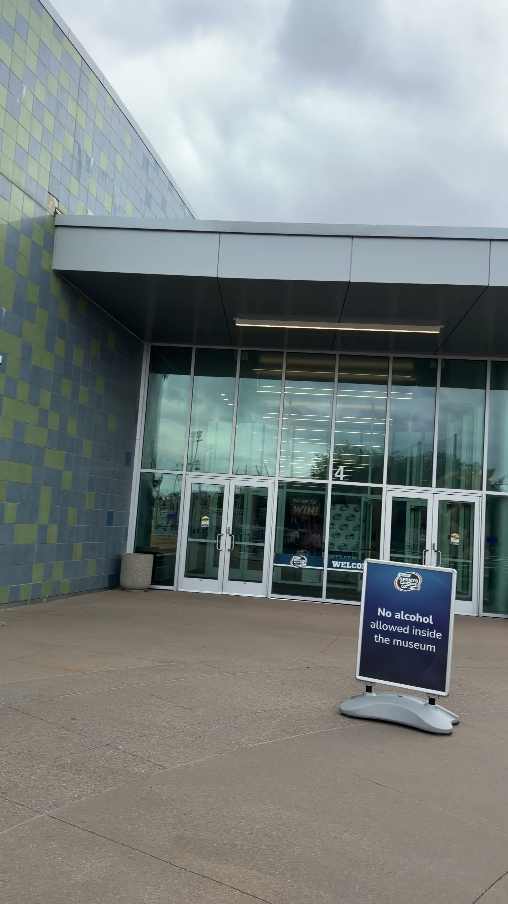

What we learned at the Children's Museum
The first public creator review page is live with the real final review cut, title, hook, and next-step upload notes.
This hub is the phone-safe version of the latest BALA creator work. It is built for review links that open on iPhone, without depending on a local laptop address or exposing private machine paths.

The first public creator review page is live with the real final review cut, title, hook, and next-step upload notes.
Localhost links like 127.0.0.1 only work on the laptop itself. This public creator hub solves that problem so Telegram links can open directly on phone.